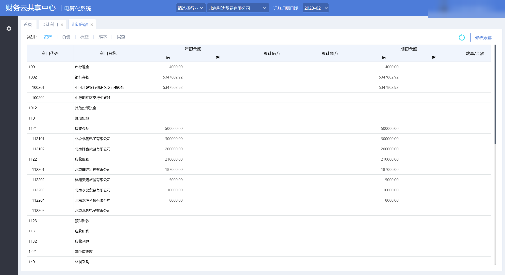
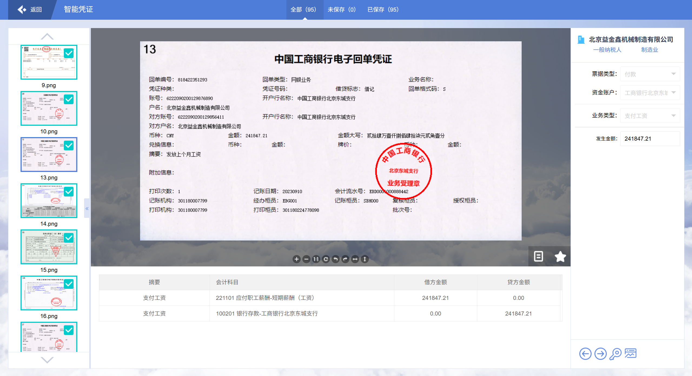
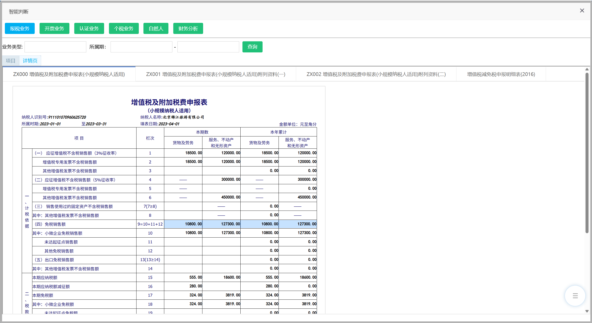
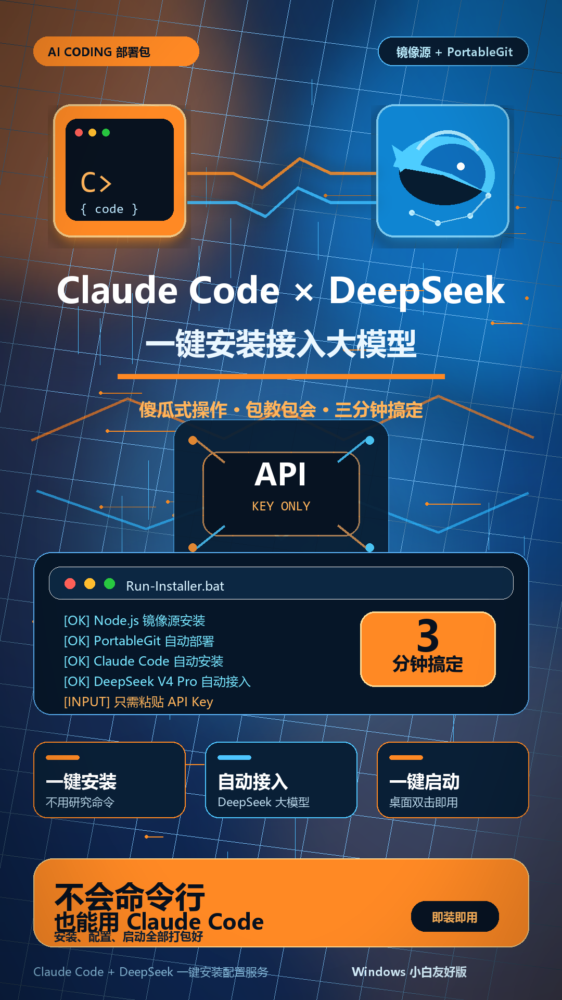
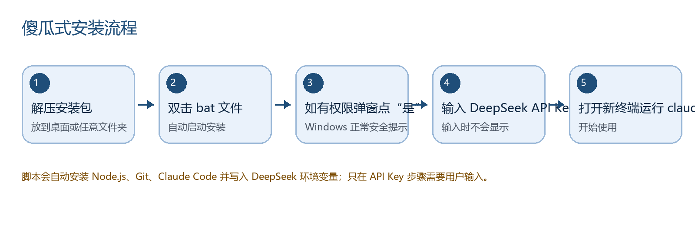
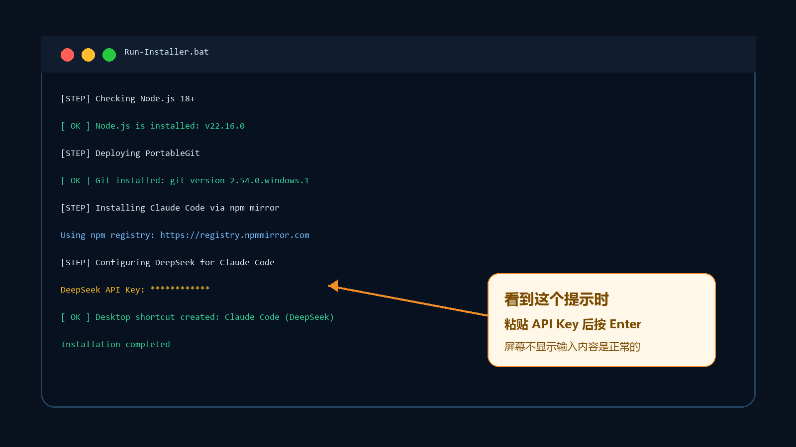

财务业务理解
围绕票据、凭证、期初余额、税务申报等流程，理解先校验、再保存、后回读的业务闭环。
Profile
我希望进入财务相关岗位，结合会计专业基础、AI 工具使用能力和流程自动化思维，参与财务共享、财税 SaaS 实施、业务自动化或 AI 应用运营类工作。
我的实践重点不是“让 AI 猜答案”，而是围绕权威数据、业务规则、回读校验和安全边界，把重复、易错、需要审计的财务流程整理成稳定方法。
Strengths
围绕票据、凭证、期初余额、税务申报等流程，理解先校验、再保存、后回读的业务闭环。
把 AI 用在流程拆解、异常定位、规则沉淀和任务复盘中，而不是停留在简单问答。
结合浏览器操作、脚本、Excel、JSON 证据和页面回读，提升重复任务处理效率。
对账号、密码、Cookie、Token、原始答案和平台私有参数保持脱敏和不展示原则。
Featured Projects
AI 落地 · 财务数字化 · 自动化交付
Project 01
授权测试环境 · 已做脱敏展示
项目覆盖云核算、云税务、票据中心和财务机器人。我用 AI 协作拆解流程，用脚本处理重复步骤，用 Excel、标准答案和回读结果做校验，最后沉淀成可复用的方法。

处理 3 家公司约 430 行科目和余额数据，完成科目核对、余额填写、试算平衡、保存和回读校验。

完成 95/95 张票据处理和提交，定位并修复 7 条销售凭证规则匹配异常。

覆盖申报、开票、个税工资申报和任务状态审计，代表性任务 10/10 项完成。
Project 02
AI 工具落地 · Windows 自动化脚本 · 教程与交付包
项目包含 Windows 安装脚本、BAT 启动器、PortableGit 镜像源方案、API Key 配置流程、安装说明、图文教程和宣传图。它重点体现 AI 工具使用、自动化脚本交付、用户需求拆解、故障排查和教程支持能力。



Method
把实训任务拆成票据、核算、税务、机器人等模块，并明确每一步的输入、输出和完成标准。
以平台标准答案、Excel 附件、任务列表和页面回读作为权威依据，避免依赖猜测。
保存前做规则校验，保存后做页面/API 回读，提交前做结果审计。
把一次性经验整理成 SOP、提示词和可复用流程，让后续同类任务更稳定。
Education
大数据与会计 · 大专
Contact